01
คณาจารย์วุฒิเอกและงานวิจัยโดดเด่น
อาจารย์ผู้สอนประจำหลักสูตร 10 คน สำเร็จปริญญาเอกทั้งหมด ดำรงตำแหน่งผู้ช่วยศาสตราจารย์ขึ้นไป มีบทความ Scopus Q2 และทุนภายนอก (Fundamental Fund, สวก.)
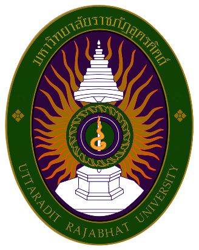
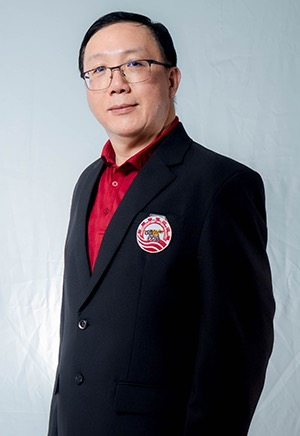
หลักสูตร วศ.ม. วิศวกรรมคอมพิวเตอร์และปัญญาประดิษฐ์ เป็นการบูรณาการความร่วมมือข้ามคณะ (Cross-Faculty Engagement) ระหว่าง คณะเทคโนโลยีอุตสาหกรรม และ คณะวิทยาศาสตร์และเทคโนโลยี มุ่งเน้นการพัฒนาทักษะคอมพิวเตอร์ฮาร์ดแวร์ ซอฟต์แวร์ และการประยุกต์ใช้โมเดลปัญญาประดิษฐ์เพื่อแก้ไขปัญหาระดับชุมชน ท้องถิ่น และสาธารณสุข
อาจารย์ผู้รับผิดชอบหลักสูตร 3 ท่าน จาก 2 คณะ — รายละเอียดคุณวุฒิและผลงานวิชาการ → Criterion 5

| จำนวนนักศึกษา (คน) | 2568 | 2569 | 2570 | 2571 | 2572 |
|---|---|---|---|---|---|
| รับเข้า (เป้าหมาย) | 10 | 10 | 10 | 10 | 10 |
| รับเข้าจริง (Active) | 4 | 8* | — | — | — |
| คาดว่าจะสำเร็จการศึกษา | — | — | ≤ 4** | ≤ 14 | ≤ 24 |
*ปีการศึกษา 2569: มีผู้ผ่านสัมภาษณ์ 8 คน ณ พ.ค. 2569 (อยู่ระหว่างขั้นสุดท้าย)
**อิงจำนวนผู้เรียนจริง Cohort 2568 แรกเข้าจำนวน 4 คน ซึ่งเลือกแผน ก2 (ระยะเวลาเรียน 2 ปี)
ปัญหา: ขาดทักษะภาษาอังกฤษเพื่อสืบค้นวารสารสากล
กลยุทธ์: ให้ลงทะเบียนวิชาเสริม 1555101 ภาษาอังกฤษสำหรับบัณฑิตศึกษา (Non-credit) และจัดสอบวัดเกณฑ์ตามประกาศ มรอ. พ.ศ. 2561
ปัญหา: ขาดทักษะการสืบค้นข้อมูล อ้างอิงวิชาการ และวิเคราะห์วิจัย
กลยุทธ์: ฝึกสืบค้นข้อมูลในห้องแล็บ บรรจุลงในรายวิชาระเบียบวิธีวิจัย 7015906 และกำหนดเกณฑ์ Plagiarism ให้ต่ำกว่า 20%
ช่องทางประชาสัมพันธ์ Website & Facebook → สไลด์ 05C
มคอ.2 · โครงสร้างหลักสูตร · PLO/CLO · คลังหลักฐาน AUN-QA

รับสมัคร · กิจกรรม · co-curricular · engagement ชุมชน
มุ่งเน้นการเสริมสร้างทักษะความรู้ทางวิชาการและการจัดทำข้อเสนอโครงการวิจัยที่สามารถตอบโจทย์ความต้องการระดับท้องถิ่นหรือสากลได้อย่างถูกต้อง
มุ่งเน้นการสร้างสรรค์ผลงานนวัตกรรมหรือองค์ความรู้ใหม่ระดับชาติ/นานาชาติ และปกป้องวิทยานิพนธ์เพื่อสำเร็จการศึกษาอย่างมีคุณภาพ
| เกณฑ์ประเมิน (Criteria) | ดีมาก (5 คะแนน) | ดี/พอใช้ (3-4 คะแนน) | ปรับปรุง (1-2 คะแนน) |
|---|---|---|---|
| 1. การออกแบบสถาปัตยกรรม (Model Design) | เลือกและปรับแต่งโครงสร้างโมเดล (เช่น Transformer, LLMs) สอดคล้องกับโจทย์อย่างเหมาะสมและครบถ้วน ใช้งานได้จริงมีประสิทธิภาพสูง | เลือกใช้โมเดลตรงกับโจทย์แต่ไม่มีการปรับแต่งหรือดัดแปลงเพิ่มเติม หรือประสิทธิภาพปานกลาง | โมเดลไม่ตรงกับลักษณะข้อมูลหรือโจทย์ ส่งผลให้การเรียนรู้ล้มเหลว (Failed to train) |
| 2. การทดสอบและการวัดผล (Evaluation) | ทดสอบบน Test Set อย่างถูกต้อง ครอบคลุมหลายมาตรวัด (Accuracy, F1-Score, ROC) และเปรียบเทียบ Baseline ได้สมบูรณ์ | วัดประสิทธิภาพโดยใช้มาตรวัดพื้นฐานเท่านั้น ขาดการวิเคราะห์เปรียบเทียบที่รอบด้าน | วัดผลด้วยมาตรวัดที่ไม่ถูกต้อง หรือรายงานเฉพาะผลบน Training Set (Overfitting) |
| 3. จรรยาบรรณข้อมูล (Data Privacy/PDPA) | อ้างอิงแหล่งที่มาของชุดข้อมูล มีการกำจัดข้อมูลระบุตัวตน (Anonymization) ป้องกันข้อมูลรั่วไหล 100% | อ้างอิงแหล่งที่มาของข้อมูลแต่ไม่มีขั้นตอนการรักษาความเป็นส่วนตัวที่รัดกุมเพียงพอ | นำข้อมูลที่มีลิขสิทธิ์หรือข้อมูลส่วนบุคคลมาเผยแพร่/ใช้งานโดยไม่ได้รับอนุญาต |
หลักสูตรวิเคราะห์ความต้องการของผู้มีส่วนได้ส่วนเสีย 5 กลุ่มหลัก (ผู้ใช้บัณฑิต ศิษย์เก่า ชุมชน นักศึกษา และคณาจารย์) นำมาสู่การออกแบบ PLO3 ที่มีความแตกต่างอย่างชัดเจนตามเป้าหมายของแต่ละแผนการเรียน เพื่อตอบโจทย์ภาควิชาการและภาคอุตสาหกรรมในพื้นที่จริง
• ภาคอุตสาหกรรม: ต้องการนักพัฒนาปัญญาประดิษฐ์และผู้สร้างต้นแบบที่แก้โจทย์ได้ทันที
• ภาควิชาการ/วิจัย: ต้องการนักวิจัยที่สามารถสร้างสรรค์องค์ความรู้ใหม่ตีพิมพ์ระดับชาติ/สากล
ชื่อรายวิชา · ประเภท CLO ตาม KSA · PLO ที่ผลักดัน
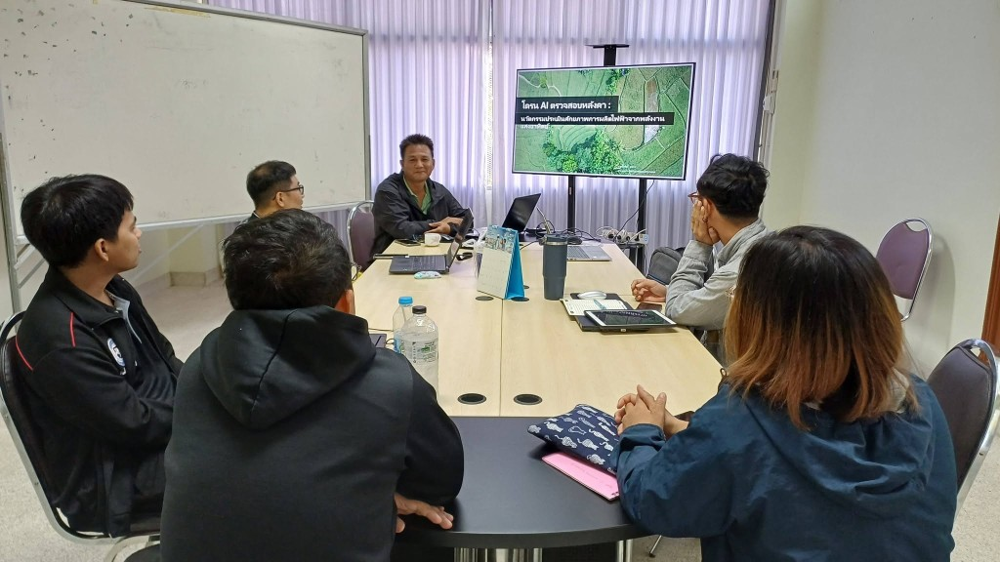
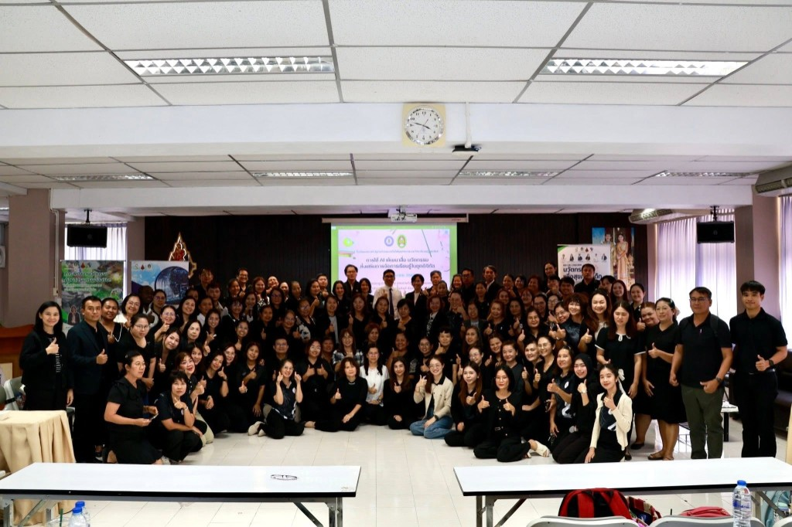
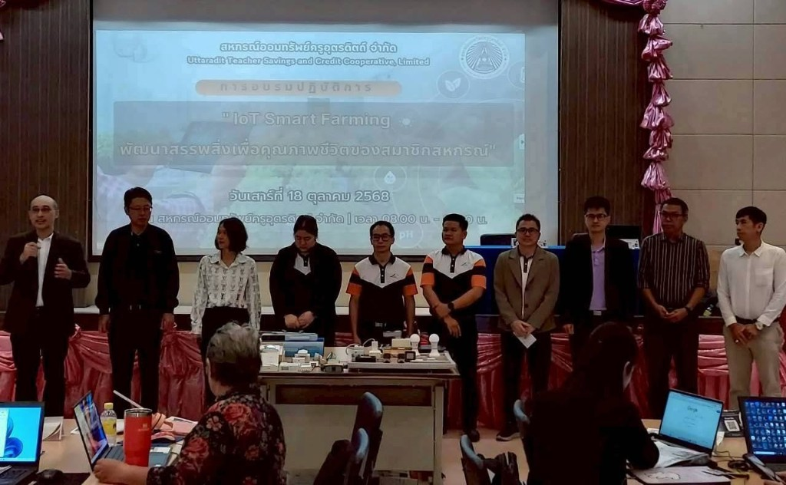
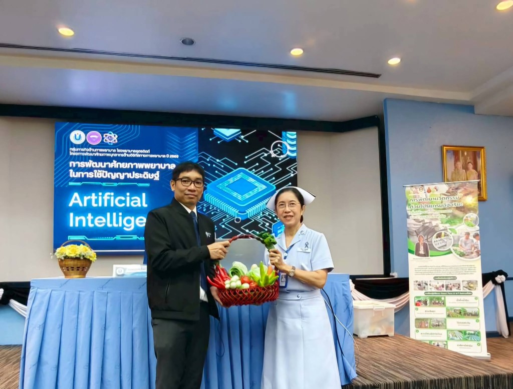
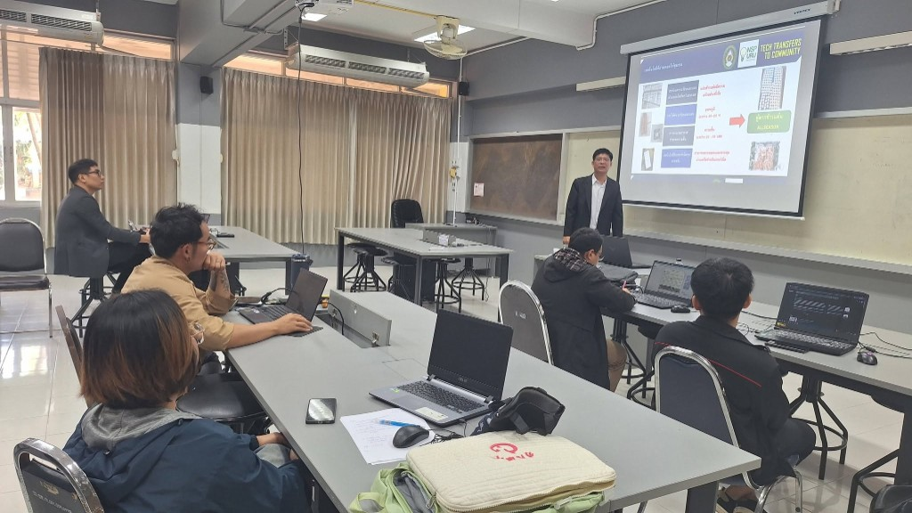
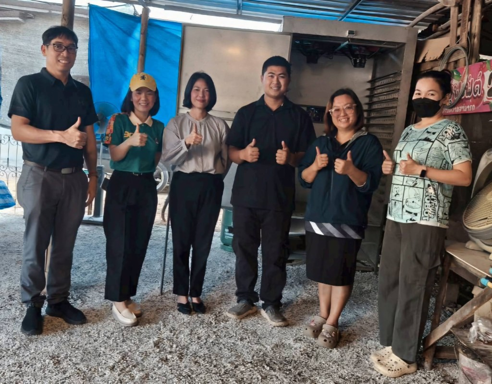
พานักศึกษาและอาจารย์ลงพื้นที่ผู้ประกอบการ/ชุมชน สำรวจปัญหาและความต้องการจริง ก่อนกำหนดหัวข้อวิจัยหรือนวัตกรรม
ตู้อบแห้งข้าวแต๋นอัจฉริยะ IoT — เกิดจากการลงพื้นที่และสัมภาษณ์ผู้ประกอบการ ก่อนพัฒนาเป็นหัวข้อวิทยานิพนธ์/สารนิพนธ์
โครงสร้างหลักสูตรและ มคอ.3 ทุกวิชาบังคับในปีแรก ได้แก่ วิชา AI & ML, ML Programming, Emerging Tech และ Research Methodology ถูกกำหนดให้เชื่อมโยงและประเมินพฤติกรรมการเรียนรู้ระดับสูงสุดของ Bloom's Taxonomy คือ ระดับ L6 (Create) และ L4 (Analyze) อย่างเป็นระบบตามปรัชญา IEL โดยมีการใช้เครือข่ายวิชาการภายนอก เช่น อาจารย์คณะครุศาสตร์ เพื่ออบรมแนวคิด Backward Design ให้คณาจารย์หลักสูตร
ทุกวิชามีการฝึกปฏิบัติในคอมพิวเตอร์แล็บ ร่วมกับการทำโครงงานวิจัยย่อยแก้ปัญหาจริง (Project-based) เพื่อสร้างชิ้นงานหรือโปรแกรมที่ทำงานได้จริง (Working code) แทนการสอบทฤษฎีแบบเดิม
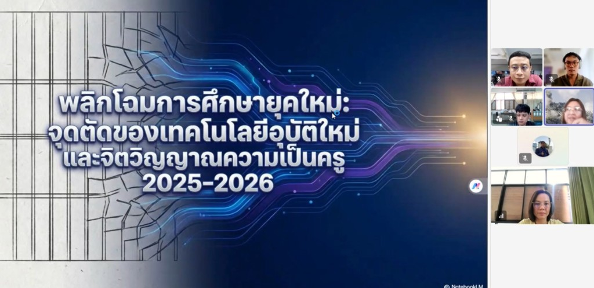
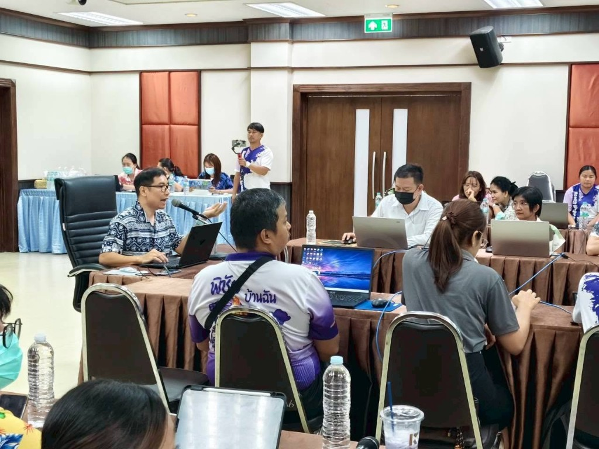
หลักสูตรผสานปรัชญาการจัดการศึกษา Integrated Experiential Learning (IEL) เข้าสู่ห้องเรียนเชิงรุก โดยกำหนดกิจกรรมปฏิบัติการภาคสนามจริงให้นักศึกษาเข้าศึกษาและมีบทบาทเป็นวิทยากรร่วม (Co-trainers) นำความรู้ AI และ IoT ไปแก้โจทย์ปัญหาจริงของชุมชน
• นักศึกษารุ่นแรกทั้ง 4 คน ได้เลือกหัวข้อวิทยานิพนธ์/สารนิพนธ์จากบริบทงานจริงของตนเอง โดยเริ่มจากการลงพื้นที่สำรวจโจทย์ เช่น การตรวจจับหมวกนิรภัยด้วย DL, ตู้อบแห้งข้าวแต๋นอัจฉริยะ IoT (ลงพื้นที่ผู้ประกอบการ + อาจารย์เครือข่ายวิทยาเขตน่านให้ข้อเสนอแนะ), AI สำหรับสถานีชาร์จรถยนต์ไฟฟ้า PEA, และการใช้ AI วิเคราะห์ดาวเทียมพื้นที่เกษตรอ้อย
หลักสูตรกำหนดเกณฑ์การประเมินด้วย Analytic Scoring Rubrics 4 ระดับสำหรับทุก CLO ใน มคอ.3 ทุกวิชาบังคับ — และอาจารย์ผู้สอนแจ้ง Rubric ให้นักศึกษาทราบตั้งแต่ต้นภาคเรียน (พร้อมกำหนดการส่งงาน/สอบ) เพื่อให้ผู้เรียนรู้เกณฑ์ก่อนปฏิบัติ ไม่ใช่ประเมินหลังจบวิชา
Rubric / Marking Scheme จาก มคอ.3 ถูกอาจารย์นำเสนอและอธิบายในชั้นเรียนตั้งแต่ต้นภาคการศึกษา นักศึกษารู้ว่าจะถูกวัดอย่างไรในแต่ละ CLO ก่อนส่งงานและก่อนสอบ
กำหนดให้การประเมินมีน้ำหนักกระจายตลอดภาคเรียน — ทั้งระหว่างภาค (formative) และสรุปผล (summative) — โดยแต่ละรายวิชากำหนดสัดส่วนใน มคอ.3 ตามลักษณะการเรียนรู้ ไม่กำหนดตัวเลขตายตัวทุกวิชา เพื่อสะท้อนพัฒนาการที่ต่อเนื่องและไม่พึ่งพาการสอบปลายภาคเพียงครั้งเดียว
จัดทำและใช้ แบบฟอร์ม Grade Verification รายวิชาทุกสิ้นภาค (เริ่มภาค 1/2569) · สนับสนุนด้วย มคอ.5 + แนวปฏิบัติส่งผลประเมิน มรอ. (AUNQA-4-7-1) · ผลทวนสอบ→ปรับปรุง Rubric/มคอ.3 รอบถัดไป

| อาจารย์ผู้รับผิดชอบหลักสูตร | ภาค 2/2568 | ภาค 3/2568 | รวม 2 ภาค |
|---|---|---|---|
| ผศ.ดร.พิศิษฐ์ นาคใจ | 1.03 | 0.67 | 1.70 |
| ผศ.ดร.พัชรี มณีรัตน์ | 1.06 | 0.96 | 2.01 |
| ผศ.ดร.กาญจนา ดาวเด่น | 0.77 | 0.97 | 1.74 |
| FTE ระดับหลักสูตร CPE & AI | 0.08 | 0.07 | 0.16 |
*หมายเหตุ: ค่า FTE รายอาจารย์ ≥ 1.0 สะท้อนภาระงานเต็มเวลา ซึ่งครอบคลุมการสอนหลายหลักสูตร แหล่งข้อมูล: workload.uru.ac.th
| อาจารย์ผู้สอน | โครงการวิจัย / กิจกรรมบริการวิชาการ | ประเภททุน / พื้นที่ |
|---|---|---|
| ผศ.ดร.พัชรี มณีรัตน์ | โมเดล AI ในระบบดูแลผู้ป่วยโรคหัวใจและหลอดเลือด (ร่วมกับ รพ.อุตรดิตถ์) | ทุน Fundamental Fund มรอ. |
| ผศ.ดร.กาญจนา ดาวเด่น | การใช้ระบบคอมพิวเตอร์วิทัศน์ (CV) และโดรนตรวจจับควบคุมศัตรูมะพร้าว | ทุนสนับสนุน สวก. / ประจวบฯ |
| ผศ.ดร.พิศิษฐ์ นาคใจ | กิจกรรมบริการวิชาการถ่ายทอดทักษะ AI แก่ครูในเทศบาล 3 แห่ง และสหกรณ์ครู | จัด IEL workshop ในพื้นที่ |
ผลงานตีพิมพ์วารสารวิชาการนานาชาติระดับ Scopus Q2 (Sains Malaysiana) ของ ผศ.ดร.พัชรี มณีรัตน์ และคณะ
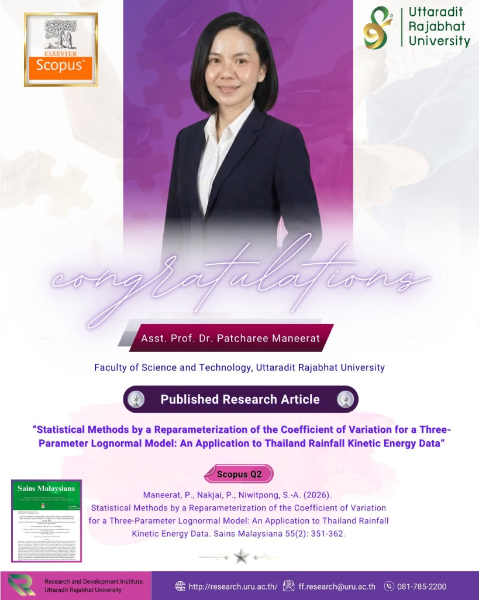
คณาจารย์ผู้รับผิดชอบและประจำหลักสูตรรวม 10 คน (ตาม สมอ.08 ก.พ. 2569) มีคุณวุฒิปริญญาเอก 100% ดำรงตำแหน่งทางวิชาการระดับ ผศ. และ รศ. ครบถ้วนทุกคน

อาจารย์ประจำหลักสูตรมีผลงานตีพิมพ์/ได้รับทุนวิจัยภายนอกรวม 7 รายการในปีแรก:
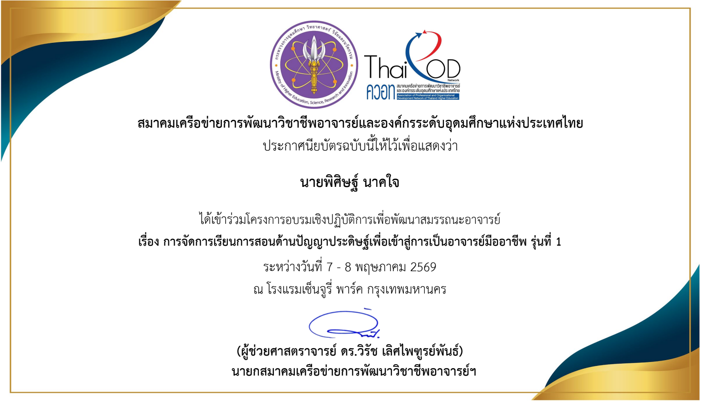
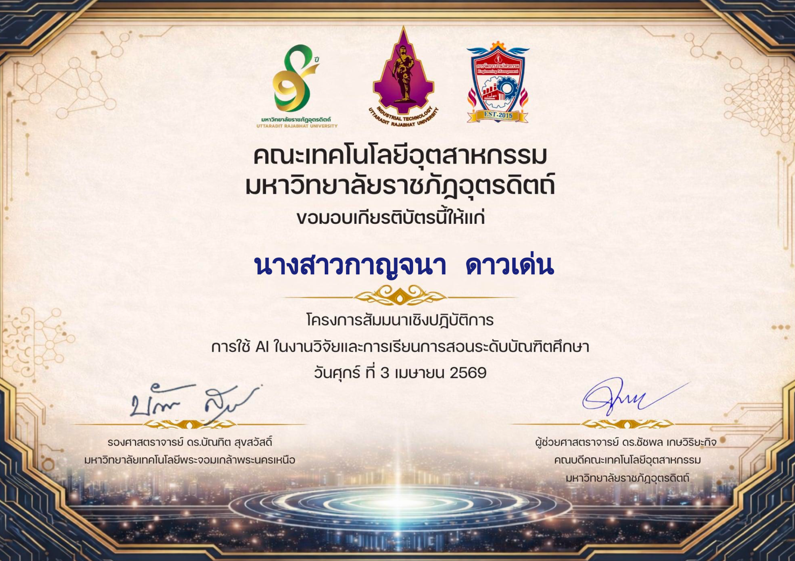
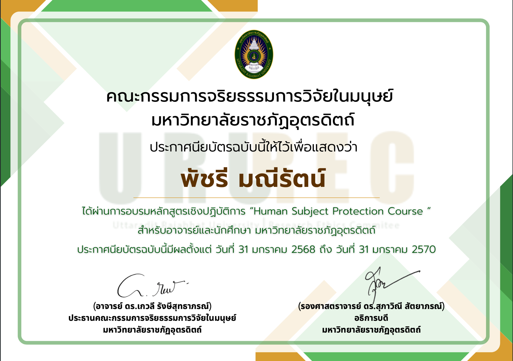
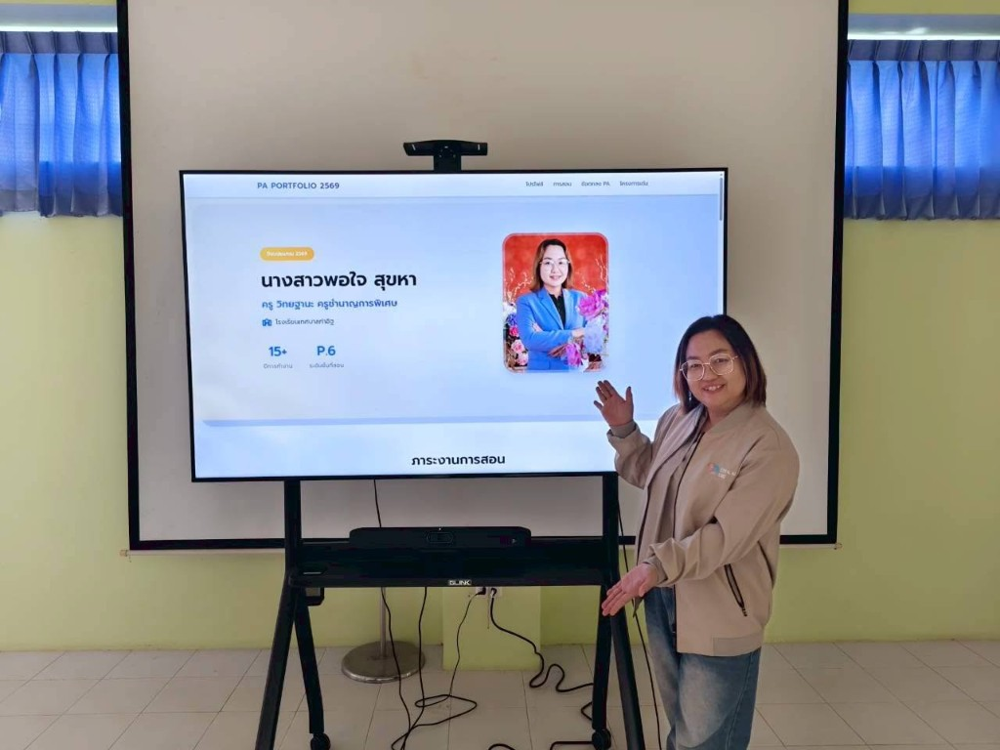
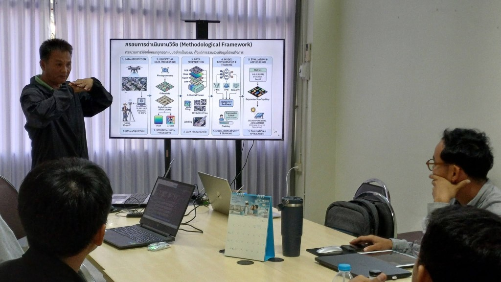
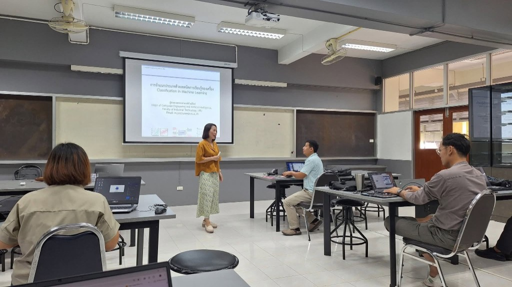
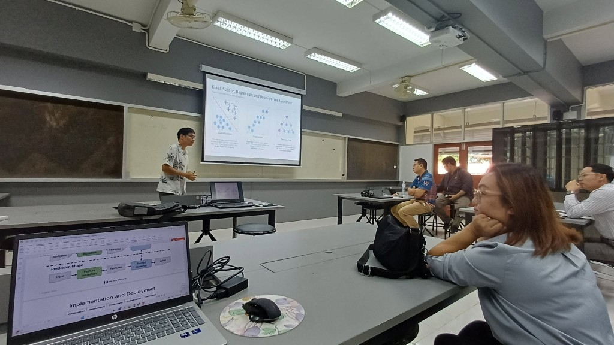
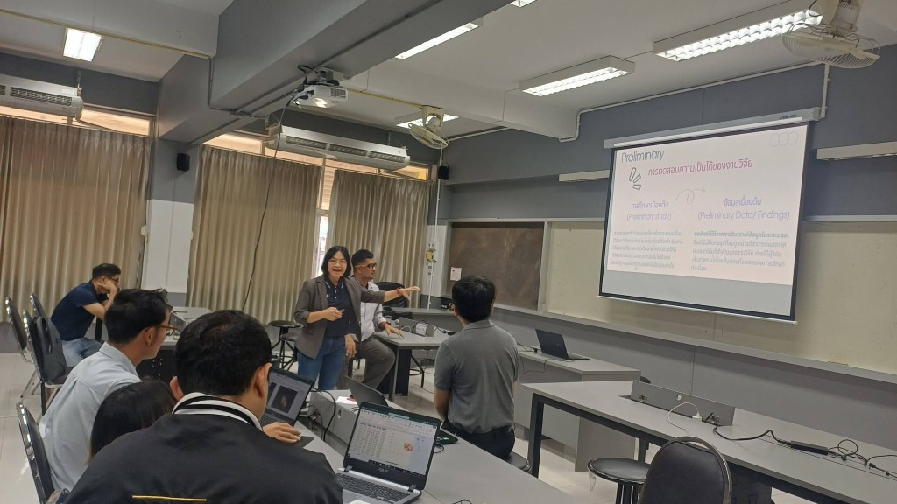
หลักสูตรดูแลนักศึกษาแบบครบวงจรผ่านระบบไอที: ระบบการลงทะเบียน SmartURU และระบบสารสนเทศประธานหลักสูตรสำหรับตรวจสอบการสำเร็จการศึกษาและรายงานเกรดอย่างเป็นระบบ
กำหนดให้อาจารย์ที่ปรึกษาวิทยานิพนธ์/สารนิพนธ์นัดพบติดตามความก้าวหน้านักศึกษาทุกคนอย่างน้อย 1 ครั้งต่อเดือน เพื่อให้ประเมินความก้าวหน้าและกรอกผลในระบบสารสนเทศ
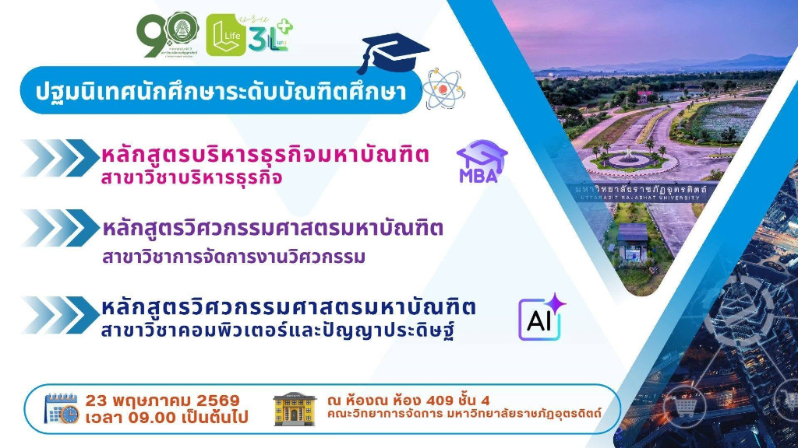
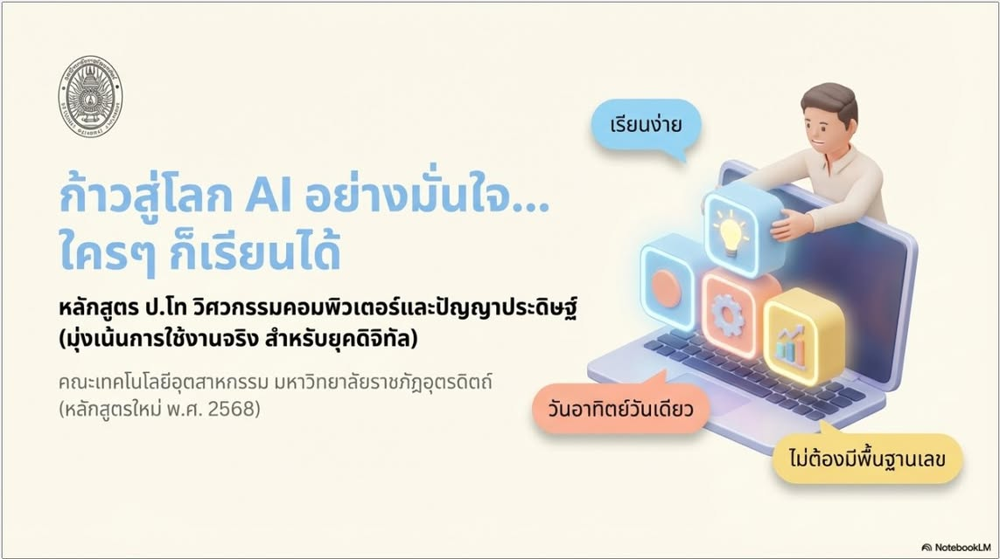
หลักสูตรให้บริการคอมพิวเตอร์และห้องปฏิบัติการเฉพาะทางในอาคาร ICIT ชั้น 2 จำนวน 7 ห้อง รวมเครื่องคอมพิวเตอร์ประสิทธิภาพสูง 277 เครื่อง พร้อมฐานข้อมูลวิจัยนานาชาติ 7 ฐานข้อมูลในการสืบค้นวรรณกรรมเชิงลึก
นักศึกษาสามารถเข้าถึง ScienceDirect, Springer Nature, ACM และฐานข้อมูลออนไลน์ของกระทรวง อว. ได้อย่างครบวงจรผ่านระบบห้องสมุดดิจิทัลและ OPAC
เพื่อแก้ปัญหาเครื่องคอมพิวเตอร์ในพื้นที่จำกัด หลักสูตรจัดระบบสนับสนุนนักศึกษาในการเข้าถึง GPU และทรัพยากรคำนวณขั้นสูงผ่านบริการคลาวด์:
| หลักสูตร / สถาบัน | ภาคปกติ | ภาคพิเศษ | รวม |
|---|---|---|---|
| มรอ. วศ.ม. CPE&AI | 4 | — | 4 |
| มช. วศ.ม. วิศวกรรมคอมพิวเตอร์ | 16 | 6 | 22 |
| สจล. วศ.ม. ไฟฟ้าและคอมพิวเตอร์ | 39 | 3 | 42 |
Evidence: AUNQA-6-BM-CMU-2568 · AUNQA-6-BM-KMITL-2567
| มหาวิทยาลัย | หลักสูตร ป.โท | นศ. ปี~1 |
|---|---|---|
| มรอ. | วิศวกรรมคอมพิวเตอร์และปัญญาประดิษฐ์ (วศ.ม.) | 4 |
| ราชภัฏภาคเหนือ | ไม่มีหลักสูตรเทียบเคียง | — |
แม้หลักสูตรเปิดสอนปีแรกและยังไม่มีผู้สำเร็จการศึกษาอย่างเป็นทางการ แต่มีอัตราผ่านเกรด (Pass Rate) ของนักศึกษาในวิชาบังคับปีที่หนึ่งครบถ้วน 100%
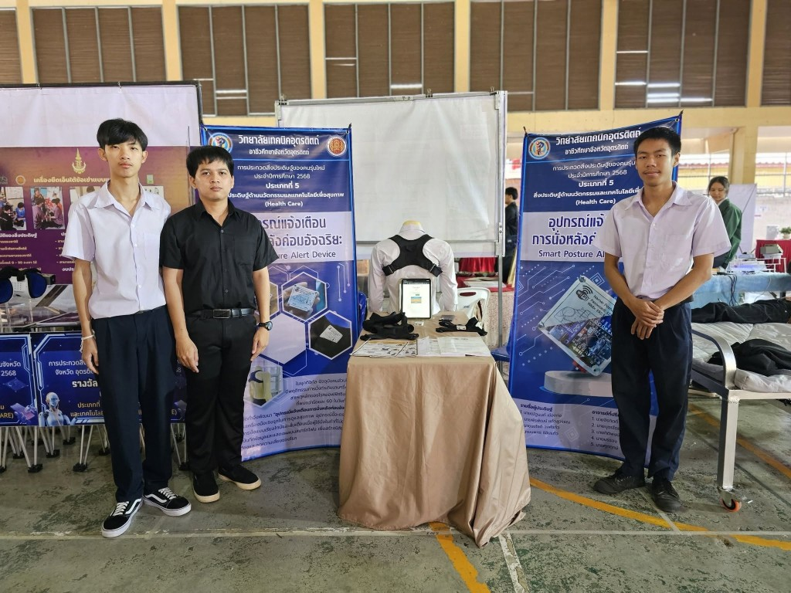
ข้าราชการครูผู้ช่วย แผนกช่างอิเล็กทรอนิกส์ วิทยาลัยเทคนิคอุตรดิตถ์ · ผลงาน อุปกรณ์แจ้งเตือนการนั่งหลังค่อมอัจฉริยะ
• 🥉 เหรียญทองแดง: การประกวดนวัตกรรม สิ่งประดิษฐ์ของคนรุ่นใหม่ ระดับภาคเหนือ (ม.ค. 2569)
• 🏆 รางวัลชนะเลิศอันดับ 1: งานวันเทคโนโลยี ครั้งที่ 11 (ก.พ. 2569) ณ คณะเทคโนโลยีอุตสาหกรรม มรอ.
นักศึกษาในระดับบัณฑิตศึกษาได้รับการยอมรับในฐานะวิทยากรผู้ร่วมสอน AI ให้แก่ครูระดับการศึกษาขั้นพื้นฐาน (โรงเรียนเทศบาล 3 แห่ง) ซึ่งสะท้อนความสามารถเชิงปฏิบัติจริง
อาจารย์ผู้สอนประจำหลักสูตร 10 คน สำเร็จปริญญาเอกทั้งหมด ดำรงตำแหน่งผู้ช่วยศาสตราจารย์ขึ้นไป มีบทความ Scopus Q2 และทุนภายนอก (Fundamental Fund, สวก.)
ร่วมมือแก้ปัญหากับหน่วยงานพื้นที่ (รพ.อุตรดิตถ์, สหกรณ์ออมทรัพย์ครู) และถ่ายทอดเทคโนโลยี AI สู่ครูในท้องถิ่นอย่างเป็นรูปธรรม
ห้องปฏิบัติการ ICIT 277 เครื่อง เครือข่าย Wi‑Fi 795 จุด และฐานข้อมูลวารสารสากล 8 แหล่งผ่านหอสมุดมหาวิทยาลัย
ออกแบบหลักสูตรแบบ Backward Design จัดทำ CLO–PLO Mapping ครบ 33 วิชา พร้อมเกณฑ์ประเมินตาม Rubric ทฤษฎี/ปฏิบัติใน มคอ.3
ติดตามและเร่งรัดขั้นตอนการพิจารณารับทราบหลักสูตร (สมอ.08) จาก สป.อว. ให้เสร็จสิ้นโดยเร็ว เพื่อเป็นหลักประกันความถูกต้องเชิงกฎหมายและสิทธิประโยชน์ในการกู้เรียนของนักศึกษา
วางกลไกการโค้ชชิ่งและดูแลวิทยานิพนธ์ของนักศึกษารุ่นแรกตั้งแต่เนิ่นๆ เพื่อผลักดันให้ผลงานมีคุณภาพเพียงพอกับการตีพิมพ์ในวารสาร Scopus/TCI กลุ่ม 1 ก่อนสำเร็จศึกษา
| เกณฑ์ | งานหลัก |
|---|---|
| C4, C8 | สรุป PLO รอบ 1 จาก มคอ.5 วิชาบังคับ 4 วิชา |
| C4 | ใช้ แบบฟอร์ม Grade Verification ทุกสิ้นภาค |
| C6 | Benchmarking Retention / Satisfaction กับคู่เทียบ 3 แห่ง |
| C2, C8 | ทบทวนหลักสูตรรายปี (มคอ.7) จากผล มคอ.5 + ข้อเสนอนักศึกษา |
| C8 | ออกแบบ Employer Survey เตรียมรุ่นบัณฑิตแรก |
CLO วิชาบังคับบรรลุตาม Rubric มคอ.5 — สะสมรายงานรอบ 1 ครบ 4 วิชา
รายงานเปรียบเทียบ KPI กับคู่เทียบ ≥ 3 สถาบัน
ทวนสอบเกรดรายวิชาด้วยแบบฟอร์มมาตรฐาน ทุกสิ้นภาคเรียน
Thank You
ขอขอบพระคุณคณะกรรมการผู้ประเมินทุกท่าน
ที่ให้เกียรติเข้าร่วมการประเมินคุณภาพการศึกษาภายในระดับหลักสูตร ตามเกณฑ์ AUN-QA Version 4.0